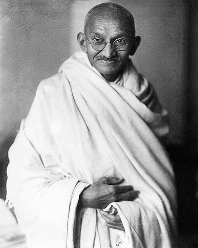

Ideologies / Religious
What is Gandhism?
Gandhism is a political ideology in the Religious family. Hind Swaraj argues that real self rule is mastery of oneself, not just removing foreign rulers. Gandhi condemned modern industrial civilisation, with its railways, machinery, lawyers and doctors, as a disease. He praised village life and hand production, and in later writing pictured India as a federation of self sufficient villages. Resistance must take the form of non violent refusal to cooperate.
Self rule through truth and non violence.
Defined from: M. K. Gandhi, Hind Swaraj (1909)
See how close you are to Gandhism Dare a friend to answer as one


Where Gandhism stands on 13 axes
Each axis runs from 0 to 100. A score of 50 is the middle. On a classic compass it sits in the Libertarian Right quadrant.
| Axis | Position | Score | In words |
|---|---|---|---|
| EconomyMarket to Planned | 35 | Leans Market | |
| OwnershipPrivate to Collective | 60 | Leans Collective | |
| RightsLiberty to Security | 5 | Very strongly Liberty | |
| GovernmentDemocracy to Autocracy | 10 | Very strongly Democracy | |
| StructureDecentralised to Centralised | 0 | Very strongly Decentralised | |
| NationInternationalist to Nationalist | 55 | Balanced | |
| ImmigrationMulticulturalist to Assimilationist | 10 | Very strongly Multiculturalist | |
| ValuesProgressive to Traditional | 75 | Strongly Traditional | |
| TechnologyAccelerationist to Precautionary | 95 | Very strongly Precautionary | |
| EnvironmentIndustrialist to Environmentalist | 85 | Very strongly Environmentalist | |
| ReligionSecular to Religious | 90 | Very strongly Religious | |
| MilitaryPacifist to Militarist | 0 | Very strongly Pacifist | |
| TradeFree Trade to Protectionist | 90 | Very strongly Protectionist |
Ideologies closest to Gandhism
- Indigenous Resurgence79% alike
- Engaged Buddhism75% alike
- Agrarianism74% alike
- Bioregionalism74% alike
- Daoism72% alike
Its opposite on this map is Juche, at 12%.
Parties near Gandhism
- American Solidarity PartyUnited States. Platform and Principles (2024)75% alike
- DiggersEngland. The True Levellers Standard Advanced (1649)70% alike
- SolidarityPoland. The Self Governing Republic (1981)68% alike
- Italian People's PartyItaly. Appeal to the Free and Strong (1919)66% alike
Common questions
What is Gandhism?
Gandhism is a political ideology in the Religious family. Hind Swaraj argues that real self rule is mastery of oneself, not just removing foreign rulers. Gandhi condemned modern industrial civilisation, with its railways, machinery, lawyers and doctors, as a disease. He praised village life and hand production, and in later writing pictured India as a federation of self sufficient villages. Resistance must take the form of non violent refusal to cooperate.
What does Gandhism believe?
In one line: Self rule through truth and non violence. Its strongest positions are Decentralised, Pacifist, Liberty. Hind Swaraj argues that real self rule is mastery of oneself, not just removing foreign rulers. Gandhi condemned modern industrial civilisation, with its railways, machinery, lawyers and doctors, as a disease. He praised village life and hand production, and in later writing pictured India as a federation of self sufficient villages. Resistance must take the form of non violent refusal to cooperate.
Who founded Gandhism?
Gandhism is defined here from Hind Swaraj (1909) by M. K. Gandhi. The thinker most tied to it is Mohandas Gandhi (1869 to 1948).
Is Gandhism left wing or right wing?
On a classic two axis compass Gandhism falls in the Libertarian Right quadrant, which means the economic centre and the libertarian side. Left and right hide a lot, though, which is why EthosScales scores it on thirteen separate axes.
How is Gandhism different from Indigenous Resurgence?
They are close, at a 79% match. The biggest gaps are on Technology, where Gandhism scores 95 and Indigenous Resurgence scores 65, and Religion, where Gandhism scores 90 and Indigenous Resurgence scores 60. On each axis, 0 is one end and 100 is the other.
Think this is wrong? Suggest a correction. The scores are editorial estimates.